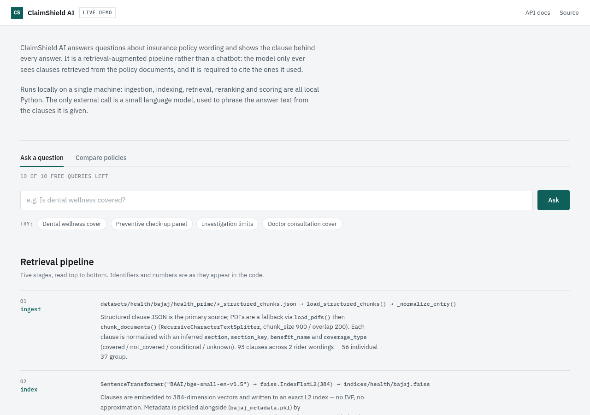
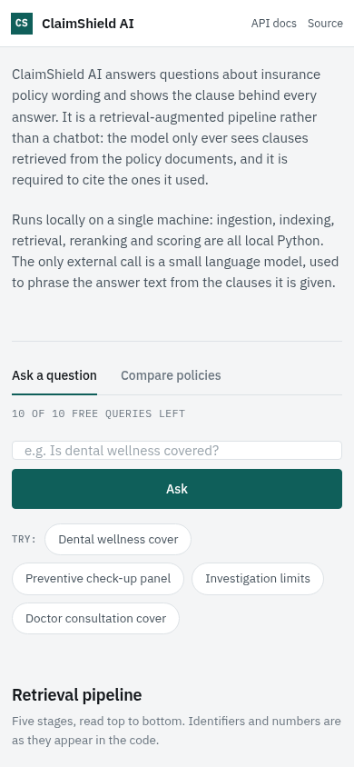

A retrieval-augmented policy service. It indexes policy clauses into a vector store,
retrieves and re-ranks the clauses relevant to a question, and answers only from what
it retrieved — with citations and a confidence score — plus a local harness that scores
the retriever itself. Built around one question: can this coverage answer be trusted?
Every answer names the clauses behind it and carries a measurable confidence, and the
retriever itself is scored offline rather than taken on trust.
In plain terms: Ask a question about a policy document and get an answer that quotes the clauses it used — or tells you it could not find enough to answer.
Working, over a real corpus: 93 policy clauses indexed in a FAISS index, retrieved and
re-ranked per question, then answered with the clauses that support the answer named
in the response. When retrieval does not clear the confidence floor, no answer is
produced at all.
On a fixed address — self-hosted, so it is up whenever the machine is running. There is no sign-in: the console shows the allowance left for your address itself.
Architecture
Python and FastAPI. FAISS holds the clause index with exact L2 search over
384-dimensional vectors. A small sentence-transformer model produces the embeddings and
a cross-encoder model does the re-ranking. Model inference goes through the Groq SDK
over the OpenAI wire format.
The pipeline, end to end
question
|
v
retrieve clause chunks FAISS exact L2, 384-dim
|
v
re-rank chunks cross-encoder model
|
v
keep best per policy (comparison only)
|
v
adaptive top-k floor 0.45, max 8 chunks
|
v
build numbered context [Source N | file]
|
v
call the model single choke point
|
v
answer + sources + evidence + confidence
The model call is the single choke point: every model call passes through it, and that
is where the per-address allowance is charged. A separate evaluation endpoint runs the
retrieval stages only and calls no model at all.
Asking a policy question, in order
The question arrives at the search endpoint, POST /search-policy.
The question is embedded by a small sentence-transformer model and matched against the clause index by exact L2 search over 384-dimensional vectors.
The retrieved chunks are re-ranked by a cross-encoder model. It is more accurate than vector distance alone, which is why it sits here rather than replacing retrieval.
The number of chunks kept is adaptive: it follows how good the matches are, bounded by a confidence floor of 0.45 and a ceiling of 8 chunks.
The retained clauses are formatted into numbered context blocks that name their source file and carry benefit, coverage, limit and waiting-period metadata.
The prompt requires the model to cite sources by number, and to reply with a fixed sentence when the documents do not contain the answer.
This is the single point every model call passes through, and it is where the per-address allowance is charged.
The response returns the answer, the distinct source files, up to six evidence records naming clause, source and confidence, and an overall confidence.
How an answer is grounded
Citations. The context is built as numbered blocks, each naming its source file and its clause metadata. The prompt requires the answer to cite them by number. The response returns the distinct source files and the individual evidence records behind the answer, so a claim in the answer can be traced back to the clause it came from.
Confidence from retrieval distance. It is computed as one over one plus the retrieval distance, averaged over the top six chunks. Stated plainly: this is a retrieval confidence derived from distance. It is not a calibrated probability, and it is not self-reported by the model.
Refusal rather than a guess. Below a fixed floor the service does not call the model at all and returns "not enough evidence found in policy documents". That is the design decision worth highlighting: the system declines to answer instead of inventing one from weak context.
Evaluation of the retriever itself. A local harness scores section-match accuracy against a similarity threshold, lexical and semantic answer accuracy, top-one accuracy, mean reciprocal rank, and coverage polarity with a four-by-four confusion matrix. It runs against a fixed set of 29 questions and costs nothing, because it never calls a model.
The allowance
The public console gives each address a small allowance of model calls. The
current deployment sets it to 10.
It is charged at the single choke point that every model call passes through, so it
counts model calls, not HTTP requests.
What one action costs
One policy searchOne model call.
A policy comparisonOne extraction per retained clause plus one verdict — three calls on the current two-policy corpus.
The retrieval evaluationNo model call. It is local embeddings and classifiers.
When the allowance is spent the API answers 429 and the console
offers a founder-secret unlock. The secret is compared server-side only and is never
sent to the browser, so it cannot be read from the page. Failed attempts are throttled
at five per address, followed by a five-minute cool-off.
The counters are held in memory, so a restart resets every address.
The allowance is a per-address limit on spending, and the code that implements it is not
committed to the public repository — it cannot be read there.
Verified metrics
Measured from the source and the running service
Metric
Value
Files mapped
40
Graph nodes
184
Edges
430
Endpoints
5
Indexed policy clauses
93
Evaluation questions
29
Flow candidates
5
The 93 clauses are 56 individual clauses and 37 group clauses. The five endpoints are
POST /search-policy, POST /compare-policies,
POST /evaluate-retrieval, GET /quota and
POST /founder-unlock.
All of it is one corpus: a single insurance provider, one product and one category.
Status and limitations
The documentation describes a broader design than the code implements.
This is a working service, not the wider platform the README describes. What runs is
retrieval, re-ranking, cited answers, a retrieval-derived confidence score, a refusal
path and a local evaluation harness. The README sketches a platform around that — a
design target rather than something that is built — and the directory reserved for the
agents in that design is empty. This page describes the code.
There is no authentication. The per-address allowance is a spending limit on model
calls, not access control: it bounds what one address can spend and does nothing else.
The corpus is a single insurance provider and one product, so the evaluation numbers
describe one document set rather than a general result.
One more note. The model the service calls is set by configuration, and the value the
deployed service runs with is not in the repository, so no model name is given on this
page.
Screenshots
Captured from the live console at desktop and phone width. The pipeline description and the remaining allowance are both on screen before a question is asked.

The console landing page at 1280px: what the pipeline does, the remaining allowance for this address, and the numbered stages below.

The same page at 390px. One column, no sideways scroll.